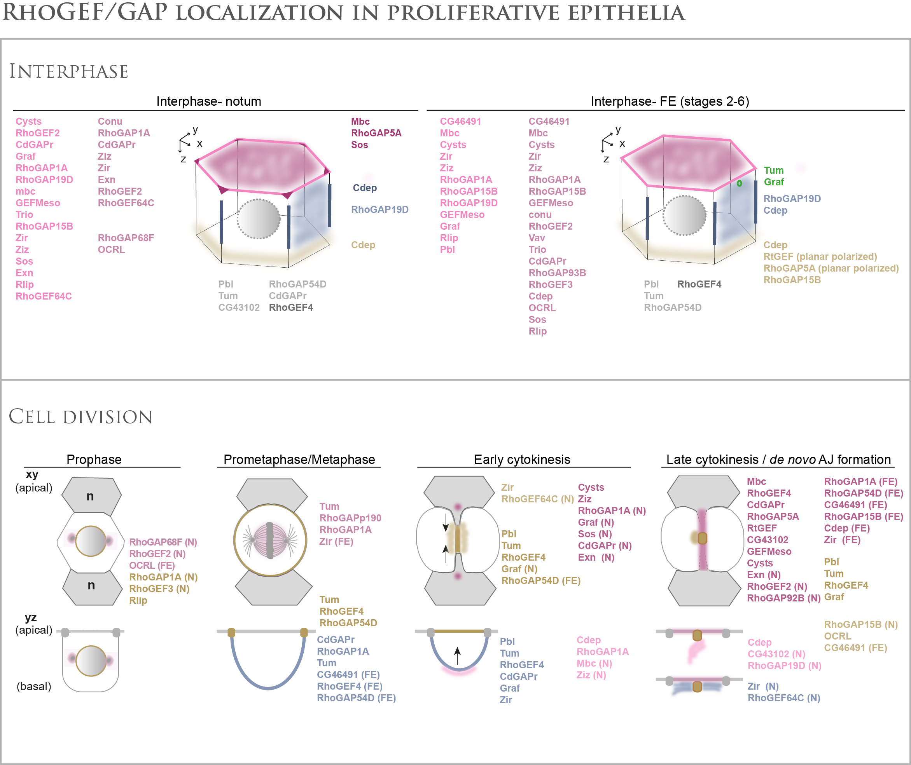

| Gene | Images | ||||||
|---|---|---|---|---|---|---|---|
For the notum, the top row images are the merges of the two fluorescent proteins indicated and the bottom images correspond to the GFP channel only.
For the FE, the top row images correspond to either xy views of the two indicated fluorescent channels, or to yz views of the GFP channel. The bottom images are xy views of the GFP channel.
For the proteins localized at the nucleus, the images are projections at the level of the nucleus.
For fluorescently tagged RhoGEF/GAP showing very low signal to noise ratio, only one image of early mitotic cell is shown since the time-lapse imaging of their localizations during cell division was not possible.
The bar on the bottom of each panel indicates the level of each protein signal observed.

TOP: Schematics of a notum (Left) and a FE (Right) epithelial cell with the subcellular localizations of RhoGEF/GAP in interphase. RhoGEF/GAP are color-coded according to their localization. Only the RhoGEF/GAP observed with a sufficient signal to noise ratio in the notum or the FE are shown
BOTTOM: Schematics of the subcellular localizations of selected RhoGEF/GAP during epithelial cell division in the notum and the FE in xy (top) and yz (bottom) views. The dividing cell is in white and the neighbouring cells (n) are in grey. The RhoGEP/GAP names are color-coded according to their localizations in each schematic of the different division phases. Black arrows: direction of cytokinetic furrowing. (N) and (FE) indicate localizations exclusively observed in the notum or the FE, respectively. Only RhoGEF/GAP with a good signal to noise ratio are indicated.